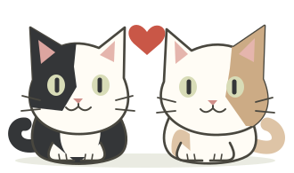

MAKE ROOM FOR THE REAL MEMORIES
Little moments,
forever kept.
Pick a photo. Add its year. We’ll put it in the scrapbook.
One at a time, or a whole folder of your favorite days.

Our little companions ♡Another memory, kept.
See it in the scrapbook ↗Open the public galleryIN YOUR OWN WORDS
Questions about us.
Write the questions and answers that belong to your story. Only your questions will appear in the birthday quiz. Add up to 10.
Already in the scrapbook
A lifetime of memories.